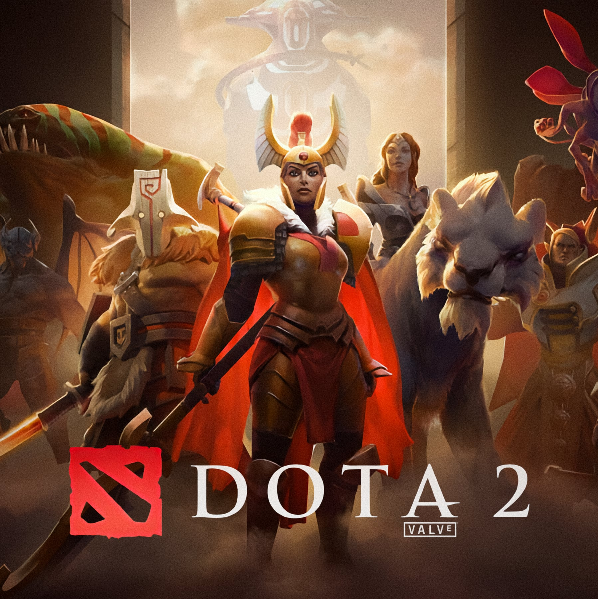

Dota 2 adalah sebuah permainan arena pertarungan daring multipemain, dan merupakan sekuel dari Defense of the
Ancients mod pada Warcraft 3: Reign of Chaos dan Warcraft 3: The Frozen Throne.
WarCraft III: Reforged adalah versi baru dari permainan strategi waktu nyata WarCraft III: Reign of Chaos
dan The Frozen Throne. Permainan ini dirilis pada 28 Januari 2020.

Grand Theft Auto V adalah permainan aksi-petualangan 2013 yang dikembangkan oleh Rockstar North dan diterbitkan
oleh Rockstar Games. Ini adalah entri utama pertama dalam seri Grand Theft Auto sejak 2008 Grand Theft Auto IV.
Dynasty Warriors 9 adalah video game hack and slash yang dikembangkan oleh Omega Force dan diterbitkan oleh Koei Tecmo.
Ini dirilis pada Februari 2018 untuk PlayStation 4, Xbox One, dan Microsoft Windows.
Ini menerima tinjauan beragam dari para kritikus.
Mortal Kombat 11 adalah game pertarungan 2019 yang dikembangkan oleh NetherRealm Studios dan diterbitkan oleh Warner Bros.
Interactive Entertainment. Berjalan pada versi Unreal Engine 3 yang sangat dimodifikasi,
ini adalah angsuran utama kesebelas dalam seri Mortal Kombat dan sekuel Mortal Kombat X 2015.
Plants vs. Zombies: Garden Warfare 2 adalah gim video penembak orang ketiga yang dikembangkan oleh PopCap Games
dan diterbitkan oleh Electronic Arts. Ini dirilis untuk Microsoft Windows, PlayStation 4 dan Xbox One.
Ini adalah sekuel dari Plants vs. Zombies: Garden Warfare. Game ini dirilis pada Februari 2016.
Naruto Shippuden: Ultimate Ninja Storm Revolution, known in Japan as Naruto Shippūden: Narutimate Storm Revolution,
is a fighting video game developed by CyberConnect2 and published by Bandai Namco Games as part of the
Naruto: Ultimate Ninja video game series, based on the manga Naruto by Masashi Kishimoto.